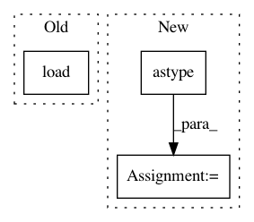

e4a36f3215735f8c351beb8f27edeb02eabb121f,pynets/dmri/track.py,,prep_tissues,#Any#Any#Any#Any#Any#Any#,49
Before Change
// Load tissue maps and prepare tissue classifier
gm_mask = nib.load(gm_in_dwi)
gm_mask_data = gm_mask.get_fdata()
wm_mask = nib.load(wm_in_dwi)
wm_mask_data = wm_mask.get_fdata()
if tiss_class == "act":
vent_csf_in_dwi = nib.load(vent_csf_in_dwi)
vent_csf_in_dwi_data = vent_csf_in_dwi.get_fdata()
After Change
del background
del include_map
elif tiss_class == "bin":
tiss_classifier = BinaryStoppingCriterion(wm_mask_data.astype("bool"))
elif tiss_class == "cmc":
voxel_size = np.average(mask_img.get_header()["pixdim"][1:4])
tiss_classifier = CmcStoppingCriterion.from_pve(wm_mask_data, gm_mask_data, vent_csf_in_dwi_data,
step_size=cmc_step_size, average_voxel_size=voxel_size)
In pattern: SUPERPATTERN
Frequency: 3
Non-data size: 3
Instances
Project Name: dPys/PyNets
Commit Name: e4a36f3215735f8c351beb8f27edeb02eabb121f
Time: 2019-11-04
Author: dpisner@utexas.edu
File Name: pynets/dmri/track.py
Class Name:
Method Name: prep_tissues
Project Name: r9y9/wavenet_vocoder
Commit Name: 985496146dd1ebdc3a43ac921de627c6b61b5200
Time: 2019-08-25
Author: zryuichi@gmail.com
File Name: audio.py
Class Name:
Method Name: load_wav
Project Name: SeanNaren/deepspeech.pytorch
Commit Name: b8e34cc75b5b655faeab651a8070c068da32c319
Time: 2019-07-25
Author: sean.narenthiran@digitalreasoning.com
File Name: data/data_loader.py
Class Name:
Method Name: load_audio